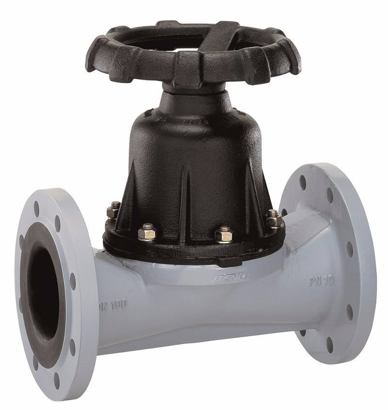

News center
新闻中心

2019-08-22
连云港计量泵网讯：隔膜阀的结构形式与一般阀门很不相同，它是依靠柔软的橡胶膜或塑料膜来控制流体运动的。
常用的隔膜阀材质分为铸铁隔膜阀，铸钢隔膜阀，不锈钢隔膜阀，塑料隔膜阀。
隔膜阀的结构形式与一般阀门大不相同，是一种新型的阀门，是一种特殊形式的截断阀，它的启闭件是一块用软质材料制成的隔膜，把阀体内腔与阀盖内腔及驱动部件隔开，现广泛使用在各个领域。
常用的隔膜阀有衬胶隔膜阀、衬氟隔膜阀、无衬里隔膜阀、塑料隔膜阀。

安装:
1必须遵守适用的安全规范。
2管道在阀门安装前要确保无杂质，否则将会对阀门造成损伤。
3连接阀门，注意对准管道。
4所有阀门，须在阀体上进行焊接工艺前，必须拆卸执行机构。
5更换膜片时，需保持膜片与密封面的开位连接，再将膜片与密封面分离。
对于气开功能阀：
(1)对执行机构通气，使膜片提起，脱离密封面。
(2)交叉拆卸阀体上的四颗螺钉，使执行机构与阀座分离，切断气源，更换膜片。
(3)对执行机构通气，使膜片收起。
(4)将膜片与阀座上的密封面对好，交叉安装固定螺钉，反复通气活动几次。
(5)关闭膜片阀试漏后，可正常使用。
对于气闭功能阀：
(1)切断执行机构气源，使膜片提起，脱离密封面。
(2)交叉拆卸阀体上的螺钉，使执行机构与阀座分离，通气，更换膜片。
(3)在使膜片收起状态下将膜片与阀座上的密封面对好，交叉安装固定螺钉。
(5)反复通气活动几次，关闭膜片阀试漏后，可正常使用。
对于双动功能阀：
(1)切断气源，使膜片提起，脱离密封面。
(2)交叉拆卸阀体上的四颗螺钉，使执行机构与阀座分离，切断下气缸气源，上气缸充气，更换膜片
(3)将下气缸充气，使膜片收起。
(4)将膜片与阀座上的密封面对好，交叉安装固定螺钉，反复通气活动几次。
(5)关闭膜片阀试漏后，可正常使用。隔膜阀是在阀体和阀盖内装有一挠性隔膜或组合隔膜，其关 闭件是与隔膜相连接的一种压缩装置。 阀座可以是堰形，也可以是直通流道的管壁。隔膜阀的优点是其操纵机构与介质通路隔开，不但保证了工作介质的纯净，同时也防止管路中介质冲击操纵机构工作部件的可能性。 此外，阀杆处不需要采用任何形式的单独密封，除非在控制有害介质中作为安全设施使用。 隔膜阀中，由于工作介质接触的仅仅是隔膜和阀体，二者均可以采用多种不同的材料，因此该阀能理想地控制多种工作介质，尤其适合带有化学腐蚀性或悬浮颗粒的介质。 隔膜阀的工作温度通常受隔膜和阀体衬里所使用材料的限制，它的工作温度范围大约为－50～175℃。隔膜阀结构简单，只由阀体、膜片和阀头组合件三个主要部件构成。 该阀易于快速拆卸和维修，更换隔膜可以在现场及短时间内完成。
连云港友谊计量泵有限公司讯
 联系电话
联系电话 地址
地址 传真
传真 邮箱
邮箱Copyright © 2020 连云港市友谊计量泵有限公司 All Rights Reserved.
苏ICP备19019129号